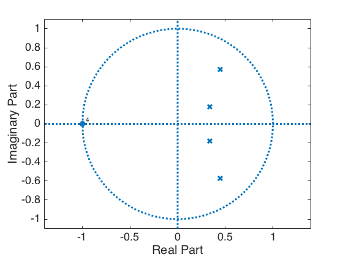
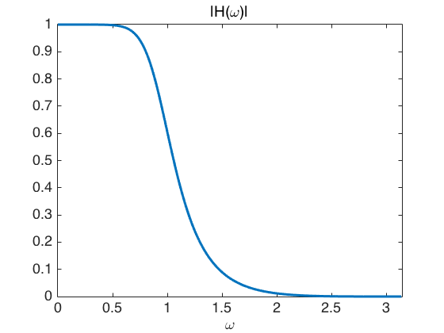
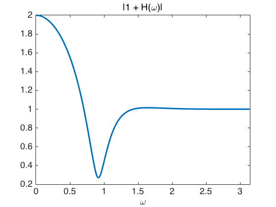
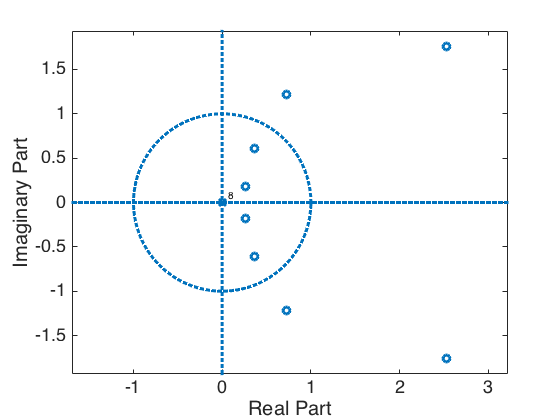
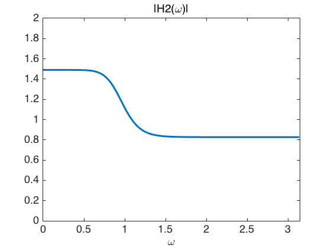
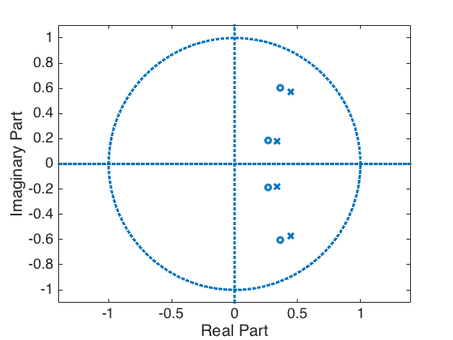

Shelving filter demo
Convert a low-pass filter to a shelving filter
Shelving filters are used to adjust audio. See Chapter 3 of 'Audio Effects ...' by Reiss and McPherson.
Ivan Selesnick
Contents
clear all % close all
Start with a low-pass filter
% Low-pass Butterworth filter [b, a] = butter(4, 0.3); % Show pole-zero diagram zplane(b,a)
Show frequency response
[H, om] = freqz(b, a); plot(om, abs(H)) title('|H(\omega)|') xlabel('\omega') xlim([0 pi])
The wrong way
How can we 'lift' the frequency response? Can we add 1? (Equivalently, can we make a parallel combination of H and a direct path?)
plot(om, abs( 1 + H)) title('|1 + H(\omega)|') xlabel('\omega') xlim([0 pi]) % No, adding identity does not give a shelving filter. % This is because H is complex-valued. You can not just add % a constant like this. Putting H in parallel with a direct % path will not give a shelving filter because the frequency % response H is complex.
Use product filter P(z) = H(z)H(1/z)
We can add a constant to the abs(H(om))^2 though, becuase it is real... See class notes..
alpha = 2.25; flip = @(x) x(end:-1:1) % C(z) = alpha B(z) B(1/z) + A(z) A(1/z) c = alpha * conv( b, flip(b) ) + conv( a, flip(a) ); c' % Notice that c is an odd-length symmetric sequence (Type I FIR filter). % This is also evident in the zero-diagram (the zeros are in reciprocals % sets) zplane(c)
flip =
@(x)x(end:-1:1)
ans =
0.0770
-0.5979
2.1552
-4.1850
5.3881
-4.1850
2.1552
-0.5979
0.0770
 Find B2(z) such that B2(z) B2(1/z) = C(z),
i.e., such that conv(b2, flip(b2)) = c
% We can do this by paritioning the roots of C into two groups. % For example, (1) the zeros inside the unit circle, % and (2) the zeros outside the unit circle. r = roots(c) % roots of C(z)
r = 2.5283 + 1.7538i 2.5283 - 1.7538i 0.7265 + 1.2166i 0.7265 - 1.2166i 0.3618 + 0.6059i 0.3618 - 0.6059i 0.2670 + 0.1852i 0.2670 - 0.1852i
k = abs(r) < 1 % Locate the roots of C(z) inside unit circle
k =
0
0
0
0
1
1
1
1
r(k) % These are the roots of C(z) inside unit cirlce
ans = 0.3618 + 0.6059i 0.3618 - 0.6059i 0.2670 + 0.1852i 0.2670 - 0.1852i
abs(r(k)) % Verify that they are inside the unit cirlce. abs() should be less than 1
ans =
0.7057
0.7057
0.3250
0.3250
b2 = poly(r(k)) % Create b2 from these roots
b2 =
1.0000 -1.2577 0.9901 -0.3424 0.0526
Shelving filter
Using same denominator as H(z). Use new numerator B2(z). (Same poles, new zeros).
[H2, om] = freqz(b2, a); plot(om, abs(H2)) title('|H2(\omega)|') xlabel('\omega') xlim([0 pi]) ylim([0 2]) % This is a shelving filter. % Question: How are the levels in the two bands determined?
zplane(b2, a) % Note that the zeros are close to the poles. % This is not suprising because the frequency response is % quite flat, so the poles and zeros are close to cancelling.
Exercises
Make filters for a graphical equalizer by applying the same idea to a bandpass filter instead of a lowpass filter.